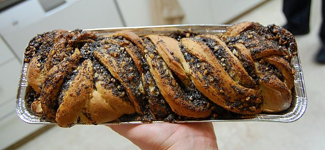

I have not always appreciated the Ashkenazi Jewish food I grew up with. It was not as colorful or spicy as the food my friends’ parents would serve. The yiddish words can sound similar to someone clearing her throat. But the more I have learned about Ashkenazi cuisine, the more I see how the dishes carry stories of resilience, culture, and celebration.
Challah
This braided bread, with its golden crust and soft interior, is deeply symbolic in Jewish tradition. Traditionally eaten on Shabbat and holidays, challah represents unity, faith, and the cycle of life. Its braided shape embodies the interconnectedness of family and community, while the sweet dough symbolizes the sweetness of life.
Kugel
This baked pudding dish, often sweet or savory, holds a cherished place in Jewish holiday gatherings and Shabbat meals. Originating in Eastern Europe, kugel typically features egg noodles or potatoes combined with ingredients like cinnamon, raisins, and sugar for a sweet version, or onions, eggs, and sometimes vegetables for a savory twist. Its popularity stems from its adaptability; each family often has a unique recipe passed down through generations, making it a deeply personal and nostalgic dish.
Kneidlach (Matzo Ball Soup)
This iconic soup with matzo ball dumplings is a fixture at Jewish holiday tables, especially during Passover. Matzo meal, eggs, and fat are combined to form the dumplings, which are then simmered in a flavorful chicken broth. Matzo ball soup represents sustenance and comfort, often associated with nurturing and healing, making it a cherished dish during times of celebration or illness.
Knish
Hailing from Eastern Europe, the knish is a savory pastry beloved for its comforting flavors. A dough encases a filling typically made of mashed potatoes, onions, and sometimes meat, spinach, or cheese. These handheld delights were initially sold by Jewish street vendors in New York City, becoming a quintessential snack for those seeking a taste of home. They symbolize a blend of Old World traditions and the adaptation of flavors in a new land.
Latkes
These potato pancakes fried to a crispy golden brown are a hallmark of Hanukkah, symbolizing the oil that miraculously burned for eight days. Served with applesauce or sour cream, latkes are a delicious and cherished treat.
Babka
Hailing from Eastern Europe, babka is a sweet, twisted bread or cake swirled with layers of chocolate or cinnamon. This decadent treat embodies the essence of indulgence and celebration, often enjoyed on holidays like Hanukkah or as a delightful accompaniment to coffee or tea.
Blintz
A crepe-like pancake enveloping a sweet cheese or fruit filling, the blintz is a delightful treat enjoyed on special occasions. Of Eastern European origin, these thin pancakes are filled, folded, and then either sautéed or baked until golden. Topped with sour cream or fruit compote, blintzes are a symbol of celebration and joy, often enjoyed during holidays like Shavuot.